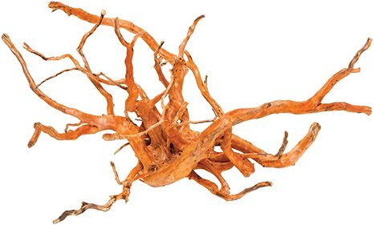
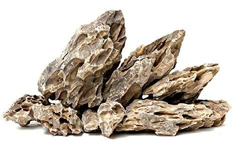
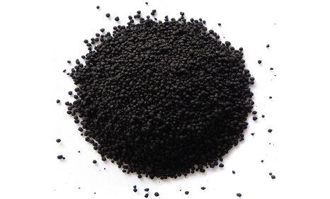
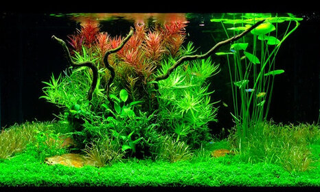
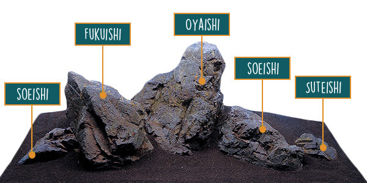
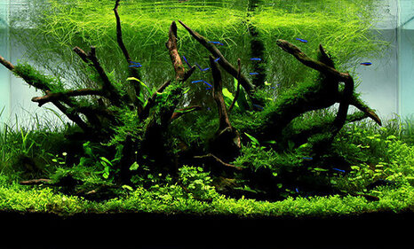
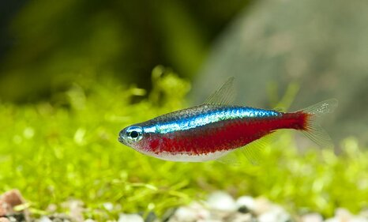
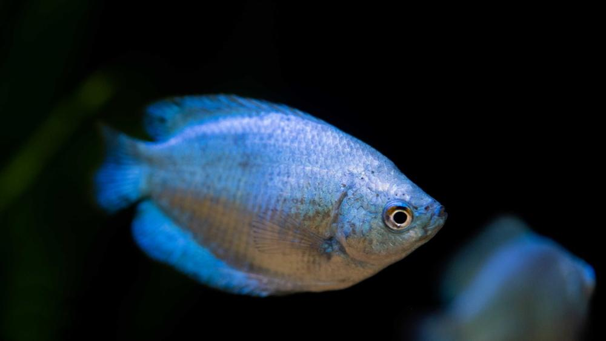
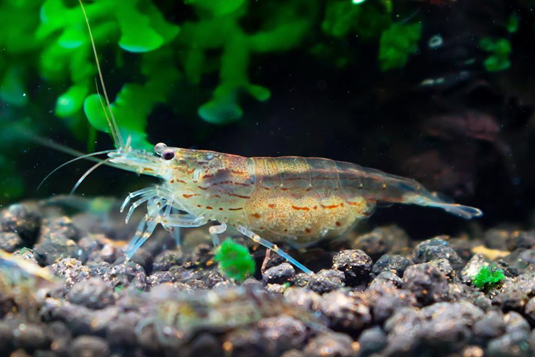
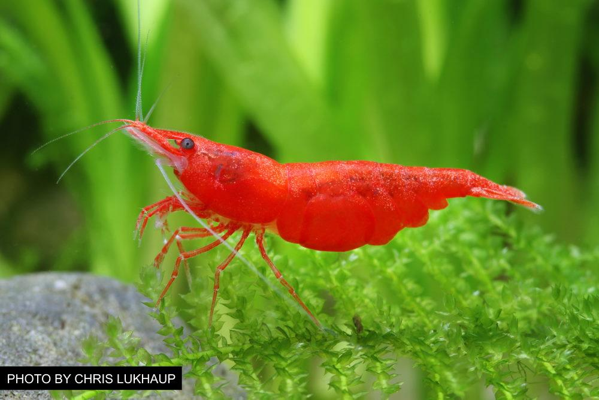

Welcome to our site. Perhaps you have been fishkeeping for some time and have become
intrigued at the possibility of having a tank that supports both flora (plants)
and fauna (animals)?
It is our hope to introduce you to the basic concepts of aquascaping from the
materials used to some different styles that achieve pleasing results.
These are by no means exhaustive!
To paraphrase James Findley, a veteran of the hobby,
"Aquascaping is the art of arranging and maintaining aquatic plants,
as well as natural materials such as stone and wood in an aesthetically
pleasing manner within an aquarium"
With some patience and research you too could get to enjoy a fully
realised natural aquarium.
Not only will it boost your mental wellbeing and enjoyment,
it will provide a focal point within your home that visitors and neighbours
will be envious off!
Components
There are 3 main parts to building a scape before we even consider plants.
Collectively they are called hardscape. A strong hardscape makes for a more
dramatic finish.
Rock forms the relief, wood can provide the viewer perspective if placed correctly
and substrate provides a grounding. Think of your scape as a miniturised hillside
vista with a forest growing upon it.
Wood

There are various types of wood that look good in the aquarium.
The most popular species are redmoor, mopani, maznanita, bonzai, bogwood
and azalea to name but a few.
Adding wood to your aquarium provides aesthetic benefits which can really
transform the look of your tank.
Wood can also give secretive species
of fish and invertebrates a place to live and hide and serve as a spawning
site for their young. It can even provide a food source for microscopic
animals such as algae.
These creatures help maintain a stable water chemistry often lacking in
livestock only tanks which tend to rely on more expensive man-made additives.
Rock

To create a visually pleasing aquarium a good hardscape is essential. I know I am repeating myself.
Rock is the mainstay of the hardscape and comes in many forms.
Make sure the stone used isn't reactive or it will alter your water
chemistry. For example limestone is calcium carbonate and will soften your
water too much over time leading to more water changes and
general maintenance.
Go for tried and tested types such as Mountainstone, Seiryu, Woodstone or
Okho that looks like dragon scales!
These are all available at specialist stockists. They can be expensive so do
choose wisely. That being said a good hardscape is an investment so don't
be deterred from buying more than you think you will need!
Substrate

A natural tank needs a medium on its base. As aquascaping uses live plants
it's recommend to use aquasoil as opposed to sand or gravel as plants
require nutrients and a medium to develop a root network.
It is possible to have a planted tank and add liquid CO2 etc though this
takes away from the aesthetic which is the whole point of aquascaping.
We recommend not using natural soils from your garden if you are
just starting out.
For decorative purposes sand, gravels of varying grades can be used to
split the scape up into different areas.
You can see this effect when viewing some of the different styles not yet covered on this site such
as islands and dioramas.
Styles
To achieve an appealing result it is best to follow a particular
aquascaping style. Below are three of the most common styles you’ll see in aquariums.
Dutch

This style is characterized by many different types of plants with multiple leaf types.
It’s commonly seen with raised ‘layers’, or terraces, known as Dutch ‘streets’.
The floor is covered with carpeting plants with taller plants lining the back of
the tank. Most noticeably, Dutch tanks utilise less hardscape so the plants really take centre stage.
Iwagumi

Inspired by the late Takashi Amano, iwagumi is one of the most
popular aquascaping styles today. It is characterized by a
series of stones arranged according to the Rule of Thirds.
There should always be an odd number of stones to prevent the layout from ‘balancing’, since
the human eye always tries to see a ‘split’ in balanced layouts.
There are at least three stones: a larger ‘Father’ stone, and at least two secondary stones.
There can be more, so long as the total number remains odd.
These tanks may imitate a natural landscape, with a common theme of simplicity and open space.
There are limited colors in plants & stone, and the number of varying flora and fauna is kept
to a minimum to create minimalism.
Scale is very important in this style. The father stone should be the largest object in the
aquarium.
Nature

Nature styles make for breathtaking tanks. These tanks seek to recreate various terrestrial
landscapes—hills, mountains, valleys, and so on.
These can be categorized into various substyles, like the ‘island’ type, which features
a stone ‘mountain’, or mound in the middle, or the triangular type, where the substrate and
genearl flow the tank slopes down from one corner of the tank.
Fish
Typically the focal point of an aquarium is its fish. However in aquascaping the design and plants are the main focal point.
Fish do play a complimentary role and can enhance the character of the tank.
As always we should be careful what fish to select as they may eat your carefully cultivated plants and prey upon other smaller
species of fish or invertebrate. A general rule of thumb to follow is if it fits in a fishes mouth it can and will be eaten!
We recommend smaller peaceful communty fish that display shoaling behaviours which is pleasant to view.
Just make sure to have at least a dozen in your tank or they will becaome stressed and that you tank in large enough to support their numbers.
Another popular addition to a planted community aquarium are shrimp. These 'inverts' are also varied and act as a clean up crew for uneaten
food that sinks to the bottom and eat algae to help keep your scape pristine.
Cardinal Tetra

Category
Rating
Care Level:
Easy
Family:
Characidae
Temperament:
Peaceful
Colours:
Blue/Red
Lifespan:
Up to 4 years
Size:
Up to 5 cm
Diet:
Omnivore
Compatability:
Peaceful Community
Recommended tank size:
Minimum 90 litres
Setup:
Freshwater, planted edges, open water in middle
Cardinal tetras are a popular, active schooling fish live peacefully shoal in a community aquarium.
In the wild they naturally live in slow moving water in shaded conditions beneeth foliage so try to
replicate this in your tank using floating plants. Also it is good to give them an open water swimming area.
Their main characteristic is a striking red band along their body. This marking contrasts well against a background of green plants.
Dwarf Gourami

Category
Rating
Care Level:
Easy
Family:
Osphronemidae
Temperament:
Peaceful
Colours:
Various
Lifespan:
Up to 5 years
Size:
Up to 10 cm
Diet:
Omnivore
Compatability:
Peaceful Community
Recommended tank size:
Minimum 50 litres
Setup:
Freshwater, heavily planted
Dwarf Gouramis have varied colours with males being the brightest to attract potential mates.
When breeding these fish build impressive bubble nests to protect their eggs and hatched fry.
Be sure to suppliment their flake food diet with some frozen foods like daphnia or even a
worm from the garden!
Amano Shrimp

Category
Rating
Care Level:
Easy
Family:
Atyidae
Temperament:
Peaceful
Colours:
Transparent / Grey
Lifespan:
2 to 3 years
Size:
Up to 5 cm
Diet:
Omnivore
Compatability:
Peaceful Community, other shrimp and snails
Recommended tank size:
Minimum 50 litres
Setup:
Freshwater, heavily planted
Amano shrimp are and extremely easy to care for. They are a social so keep them in groups of at least three.
It is entertaining to watch them all scuttling around together, going over plants, swimming around and snatching
food right from under a fish’s nose, and then swimming off to go eat it away from the others.
They are some of the best algae eaters in existence. They’ll take care of that nasty hair algae,
unlike any other shrimp species.
Cherry Shrimp

Category
Rating
Care Level:
Easy
Family:
Atyidae
Temperament:
Peaceful
Colours:
Red/Yellow/Blue
Lifespan:
Up to 2 years
Size:
Up to 3 cm
Diet:
Omnivore
Compatability:
Peaceful Community
Recommended tank size:
Minimum 25 litres
Setup:
Freshwater, heavily planted
Neocaridina come in a variety of colors from red to yellow to blue and have three pattern types.
The most common type is a solid colored red shrimp, hence the name “red cherry”. This are the easiest
shrimp to care for with one caveat. They eat biofilm so don't put them in your aquarium until it is
well established or they will have nothing to eat.
Plants
Plants form the keystone of any aquascape. They come in a variety of colours and difficulties to care for.
For example, advanced plants require specialist lighting, extra nutrients and CO2 injection systems to achieve the best results.
There are in the region of 200 plants populary used. Let's take a look at some of the more accessible types to the aspinging hobbyist.
George Farmer, a knowledgable UK aquarist can provide some insight from his tour of Tropica based in Denmark!